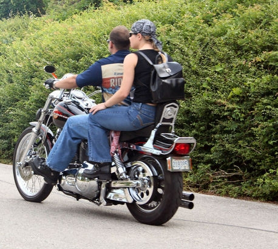

← Sve aktivnostiAktivnosti
Vožnja motorima
Grad Samobor krije neopisivu ljepotu. Ovaj mali samozatajni gradić možete doživjeti i razgledati na brojne načine, a među njima i moto turama. Označene staze, dovoljno široke za pješake, bicikliste i vozače idealne su za vas. Na vrlo lak način možete otkriti sve prekrasne krajolike koje Samobor skriva.
Uživajte u svom godišnjem odmoru na prikladan način. Ovo je jedan od načina da isprobate nešto sasvim drugačije i da se maknete od svakidašnej rutine. Obiđite grad Samobor i okolicu te uživajte u lokalnoj gastronomskoj ponudi i ostalim zanimljivim izletima i aktivnostima.